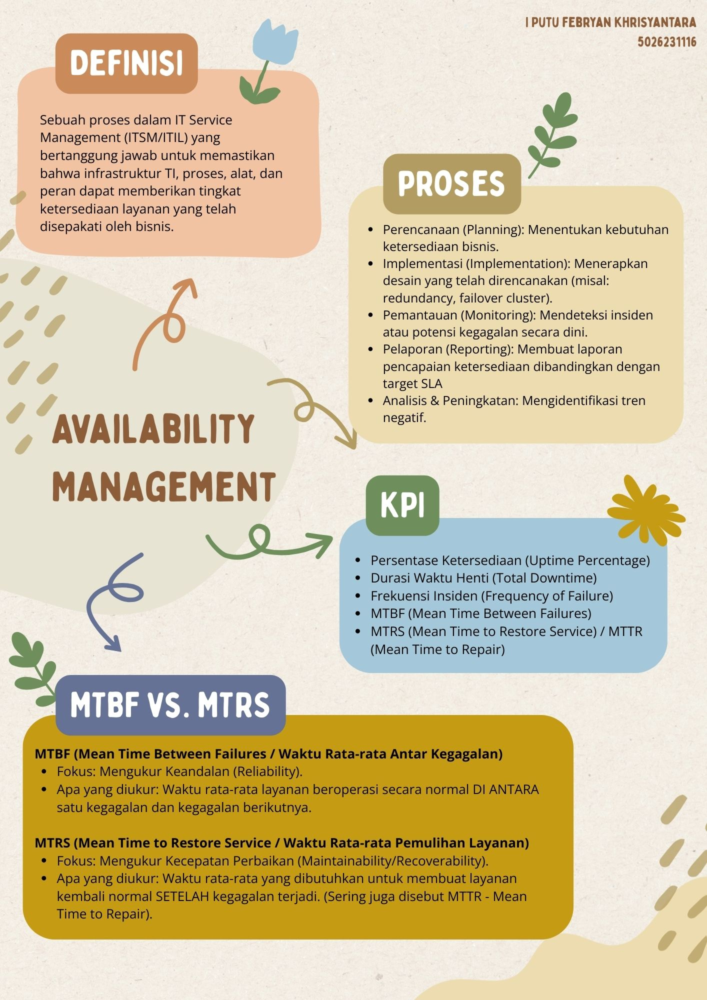
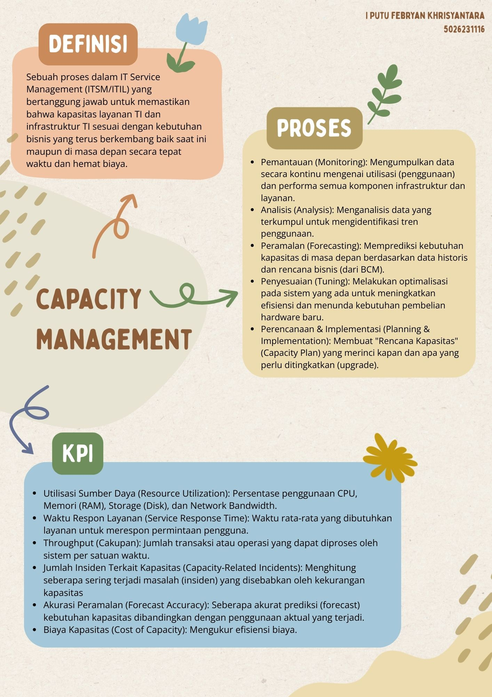
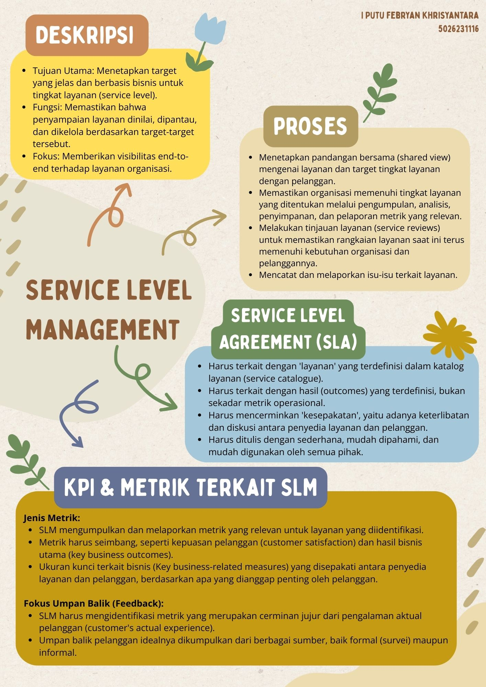
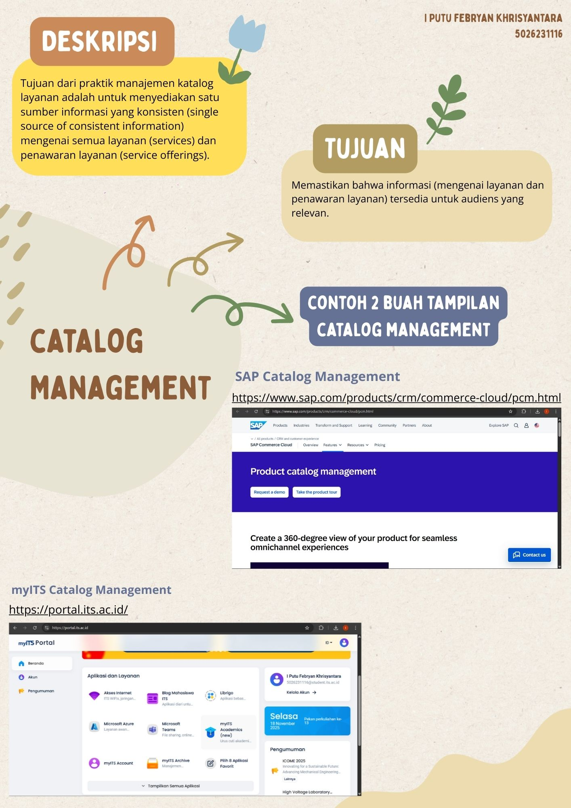

Ringkasan Kegiatan
Pembelajaran minggu ke-13 difokuskan pada penguasaan empat pilar utama operasional ITSM: Availability Management, Capacity Management, Service Level Management (SLM), dan Service Catalogue Management.
Keempat praktik ini dipelajari sebagai satu kesatuan ekosistem yang saling bergantung. Availability menjamin keandalan sistem, Capacity memastikan kecukupan sumber daya untuk performa, SLM mengikat kualitas layanan melalui perjanjian formal, dan Service Catalogue bertindak sebagai "wajah" atau menu layanan yang terstandarisasi. Studi komparasi antara AWS Service Catalog dan Freshworks Service Catalog turut dibahas untuk memberikan wawasan implementasi nyata.
1. Availability Management

Praktik ini bertujuan memastikan layanan TI dapat diakses sesuai target SLA. Pendekatannya bersifat hibrida: proaktif melalui desain infrastruktur yang tangguh (redundancy, failover) untuk mencegah kegagalan, dan reaktif melalui pemulihan cepat saat insiden terjadi.
- Proses Kunci: Mencakup penetapan target ketersediaan, pengumpulan data performa, pemantauan real-time, serta simulasi pemulihan (disaster recovery testing) untuk menguji ketahanan sistem.
- Metrik Utama (KPI): Fokus pada uptime (%), rata-rata waktu antar kegagalan (MTBF), durasi pemulihan (MTRS), serta dampak nyata terhadap pengguna (User Outage Minutes).
2. Capacity & Performance Management

Fokus utama praktik ini adalah menyeimbangkan efisiensi biaya dengan performa sistem. Tujuannya adalah memastikan infrastruktur TI mampu menangani beban kerja saat ini maupun lonjakan permintaan di masa depan tanpa penurunan kinerja.
- Proses Kunci: Meliputi monitoring penggunaan sumber daya (CPU, RAM, storage), analisis bottleneck, serta forecasting kebutuhan kapasitas berbasis tren bisnis. Tindakan optimasi (tuning) dan penambahan kapasitas (scaling) dilakukan sebelum sistem mengalami overload.
- Metrik Utama (KPI): Utilitas sumber daya (%), waktu respons aplikasi, throughput, dan akurasi prediksi kapasitas.
3. Service Level Management (SLM)

SLM berperan sebagai jembatan komunikasi antara penyedia layanan dan pelanggan. Inti dari SLM adalah Service Level Agreement (SLA), yakni dokumen kesepakatan yang memuat target kinerja dan batasan layanan.
- Prinsip SLA yang Baik: Harus realistis, disepakati kedua pihak (bukan sepihak), dan menghindari efek "Watermelon SLA" (laporan teknis hijau/bagus, namun kepuasan pengguna merah/buruk).
- Metrik Utama (KPI): Tingkat pencapaian SLA, jumlah pelanggaran (breach), dan skor kepuasan pelanggan (CSAT).
4. Service Catalogue Management

Manajemen ini bertanggung jawab menyediakan Single Source of Truth—sumber informasi tunggal yang akurat mengenai seluruh layanan aktif yang ditawarkan TI.
Tujuan Utama: Memberikan visibilitas kepada stakeholder mengenai fitur, biaya, dan cara akses layanan. Katalog yang terawat memudahkan proses request fulfillment (pemenuhan permintaan) menjadi lebih terstandar dan transparan, serta memastikan setiap perubahan layanan terdokumentasi dengan rapi.
Refleksi Pembelajaran
Pelajaran utama minggu ini adalah pentingnya integrasi antar-praktik ITSM. Saya memahami bahwa Availability dan Capacity Management adalah fondasi teknis untuk stabilitas layanan, sementara Service Level Management (SLM) memastikan kualitas tersebut dirasakan positif oleh pengguna (menghindari SLA semu).
Di sisi lain, Service Catalogue berperan vital dalam memberikan kejelasan informasi layanan. Saya belajar bahwa layanan TI yang hebat adalah hasil dari sistem yang tangguh, performa yang terukur, dan dokumentasi yang rapi.